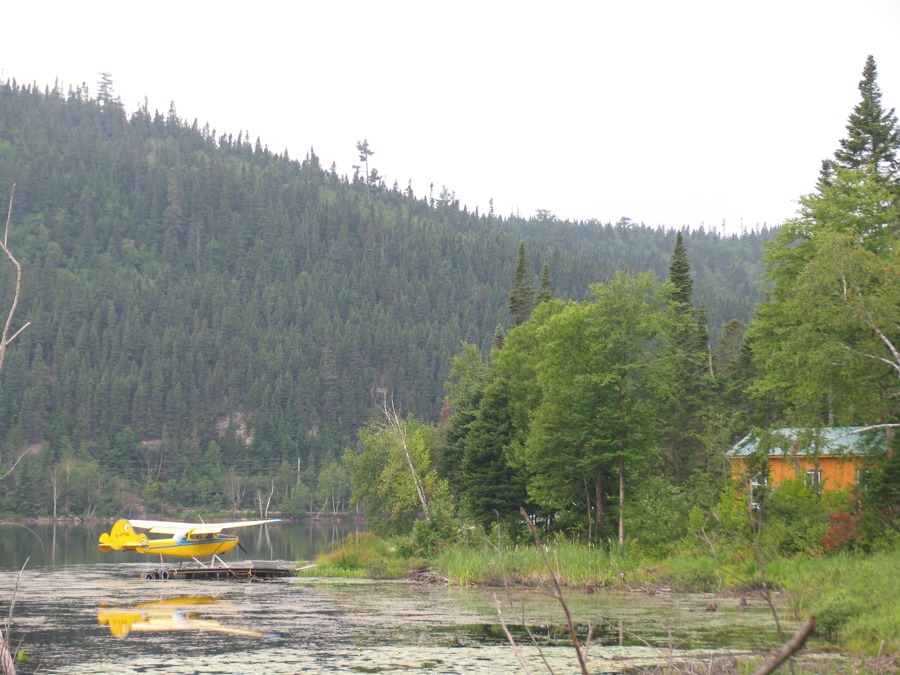
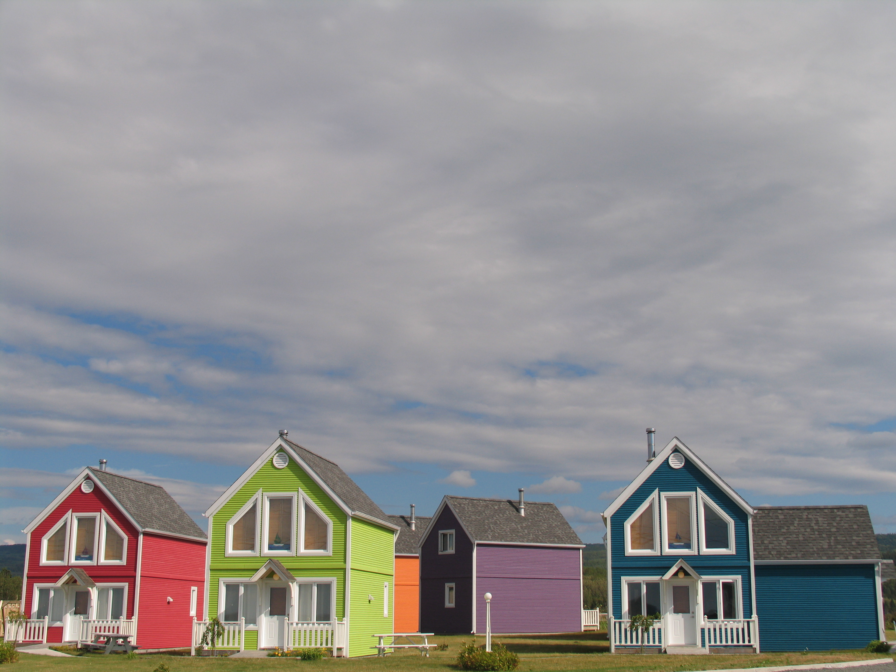

Toggle navigation
Ségolène & Damien
Le mariage
La liste
Les hébergements
Les hébergements
proche de Vallet (lieu de réception)
:
Les Chambres d'hotes
La blanchisserie à Cholet
Entre vignes et marais à Goulaine
La cour des rois à Vallet
La maison bleue à Vallet
La maison des landes
Les gîtes
Le relais de la Rinière
Les châteaux
Château de la Sebinière
Château d'Yseron
Château de l'Oiselinière
Château de la Gallissonière


Les hébergements
en centre ville de Nantes
:
Les hôtels 2 étoiles
B&B place Viarme
Hôtel Voltaire Opéra 2*
Les hôtels 3 étoiles
Hôtel Ibis place Bretagne 3*
Hôtel Ibis style place Royale 3*
Hôtel Ibis style place Graslin 3*
Hôtel La Pérouse 3*
Les hôtels 4 étoiles
Hôtel Mercure place Royale 4*
Hôtel Radisson blu 4*
Le Sozo hôtel 4*
L'Okko hôtel 4*